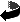

- UBERDEATHSND
- ULTIMATE_MUS
- UNCACHEGRCHUNK
- UNSIGNEDSHIFT
- UPDATEHIGH
- UPDATESIZE
- UPDATETERMINATE
- UPDATEWIDE
- UPLOAD
- URAHERO_MUS
- USEPORT2
- USL_HardError
- USL_PrintInCenter
- USL_XORICursor
- US_CPrint
- US_CPrintLine
- US_CenterWindow
- US_CheckParm
- US_ClearWindow
- US_ControlPanel
- US_DrawWindow
- US_HomeWindow
- US_LineInput
- US_Print
- US_PrintCentered
- US_PrintSigned
- US_PrintUnsigned
- US_RestoreWindow
- US_SaveWindow
- US_SetPrintRoutines
- US_Shutdown
- US_Startup
- UnCacheLump
- UpdateFace
- UpdatePaletteShifts
- UpdateSoundLoc